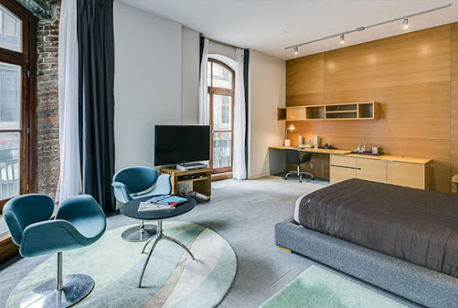

It's good to take some rest!
We provide you with the top! places to explore based on your needs. Select the requirement from the given menu and let's get started!!!
5 Star Hotels!
The Landmark Towers!

Follow up the directions!
In the city of Kanpur, The Landmark stands alone. The finest accommodation, a selection of modernist living and dining spaces, and a globally accredited health & wellness spa. Located on Mall Road, The Landmark is Kanpur’s only five-star hotel.
Following an undeniably difficult time, we are thrilled to have begun progressively reopening our property and resuming operations at the high standards of safety and service that our guests have come to expect of us.
Little Chef Hotel!

Follow up the directions!
Set on the outskirts of the city centre and 7 minutes' walk from a Ganges River ferry dock, this modest redbrick hotel is also 13 minutes from Green Park Stadium cricket ground and 3.9 km from Kanpur Central Railway Station.
The subdued rooms and streamlined suites come with free Wi-Fi, flat-screen TVs and minifridges, as well as sofas. Upgraded units add minibars and tea and coffeemaking facilities. Room service is available 24/7.
The hotel offers a colourful, multi-cuisine buffet restaurant. There's also a disco bar, a gym and yoga classes, plus a kids' playground.
Oyo 3232 Royal Inn!
Follow up the directions!
Humble lodging for Indian nationals only, offering simply furnished rooms & a restaurant/bar.
Best Western Hotel Bliss!
Follow up the directions!
This traditional hotel is 1.5 km from JK Temple and 4.5 km from Allen Forest Zoo.
All of the modern rooms offer free WiFi, flat-screen TVs and desks, plus minifridges, minibars and coffeemakers.
There’s complimentary breakfast, an ornate restaurant offering international cuisine and live music, and a rooftop garden. Amenities also include a business center, meeting rooms and free parking, as well as a laundry facilities and a playground.
Citi Club!
Follow up the directions!
Off National Highway 34, this casual hotel is 4 km from Kanpur Central train station and 3 km from JK Temple, a Hindu shrine surrounded by gardens.
The straightforward rooms come with free Wi-Fi, flat-screen TVs, and tea and coffeemaking facilities, plus air-conditioning; some also have sitting areas. Room service is available.
Parking and breakfast are complimentary. There's a relaxed restaurant with a bar, and a lounge with a fireplace, as well as a garden and a terrace. Other amenities include a kids' play area, a business centre and a soccer field, plus a gym. Couples must be married to book.
4 Star Hotels!
Regenta Central The Crystal!
Follow up the directions!
Set 4 km from Kanpur Anwarganj Railway Station, this polished contemporary hotel is 3 km from both shopping at the Z Square Mall, and the gardens surrounding the 20th-century Juggilal Kamlapat Hindu temple.
The warm rooms feature Wi-Fi access, flat-screen TVs and minifridges, plus tea and coffeemaking facilities, sitting areas and safes. Suites add city views.
Amenities include 2 restaurants (1 rooftop) and a trendy bar, as well as a gym. Meeting and event space is available.
DNG The Grand Hotel!

Follow up the directions!
Set 3 km from the Kanpur Zoo, this modern hotel among shops and eateries is 4 km from JK Temple, a well-known Hindu complex with 5 shrines, and 9 km from Kanpur Central train station.
Warmly decorated rooms feature flat-screen TVs, Wi-Fi access, and tea and coffeemaking facilities.
Amenities include a contemporary all-day restaurant, a coffee shop and a lively rooftop bar. There's also event space for up to 700 guests.
Hotel Royel Cliff!

Follow up the directions!
This polished hotel is 2 km from both the Rawatpur train station and the JK Temple.
The streamlined rooms feature free Wi-Fi, flat-screen TVs, safes and minibars, as well as tea and coffeemaking facilities. Suites add separate living rooms. Room service is available 24/7. Complimentary breakfast is served in-room.
There are 2 airy restaurants for international cuisine. Other amenities include a modern lounge bar, an outdoor pool and a gym
Hotel Celebration!
Follow up the directions!
One of the leading fully air-conditioned hotels of Kanpur. Always striving for complete customer satisfaction and innovative service, the Hotel Celebration is an ideal place for travelers as well as business people. Our client list includes major corporates as well as tourists from the world over. We have brought luxuries at affordable prices. At Hotel Celebration one can see a unique influence of experience and professionalism. Efficient, Sincere & devoted staff is always committed to fulfill all your needs and anticipation. We believe in quality with courtesy. All Rooms, Banquet Halls and Restaurant are fully Air Conditioned with 24 hours Generator Backup.
The Bridge Hotel!
Follow up the directions!
A 9-minute walk from Kanpur Anwrganj train station, this upscale hotel next to shops is 3 km from both the JK Temple and gardens, and the greenery of Moti Lake and park.
Relaxed rooms feature flat-screen TVs and Wi-Fi access. Room service is available 24/7.
Amenities include an informal multi-cuisine restaurant, and a trendy bar and disco. There's also a spa and a ballroom.
3 Star Hotels!
Grand Geet Hotel!
Follow up the directions!
In the city of Kanpur, The Landmark stands alone. The finest accommodation, a selection of modernist living and dining spaces, and a globally accredited health & wellness spa. Located on Mall Road, The Landmark is Kanpur’s only five-star hotel.
Following an undeniably difficult time, we are thrilled to have begun progressively reopening our property and resuming operations at the high standards of safety and service that our guests have come to expect of us.
The Bridge Hotel!
Follow up the directions!
A 9-minute walk from Kanpur Anwrganj train station, this upscale hotel next to shops is 3 km from both the JK Temple and gardens, and the greenery of Moti Lake and park.
Relaxed rooms feature flat-screen TVs and Wi-Fi access. Room service is available 24/7.
Amenities include an informal multi-cuisine restaurant, and a trendy bar and disco. There's also a spa and a ballroom.
Regenta Central The Crystal!
Follow up the directions!
Set 4 km from Kanpur Anwarganj Railway Station, this polished contemporary hotel is 3 km from both shopping at the Z Square Mall, and the gardens surrounding the 20th-century Juggilal Kamlapat Hindu temple.
The warm rooms feature Wi-Fi access, flat-screen TVs and minifridges, plus tea and coffeemaking facilities, sitting areas and safes. Suites add city views.
Amenities include 2 restaurants (1 rooftop) and a trendy bar, as well as a gym. Meeting and event space is available.
DNG The Grand Hotel!
Follow up the directions!
Set 3 km from the Kanpur Zoo, this modern hotel among shops and eateries is 4 km from JK Temple, a well-known Hindu complex with 5 shrines, and 9 km from Kanpur Central train station.
Warmly decorated rooms feature flat-screen TVs, Wi-Fi access, and tea and coffeemaking facilities.
Amenities include a contemporary all-day restaurant, a coffee shop and a lively rooftop bar. There's also event space for up to 700 guests.
Status Club!
Follow up the directions!
"The flagship property of Kanpur's premier hospitality group, offering a selection of event spaces, Kanpur's finest restaurants, and an independent resort hotel. Restaurant Offerings - Dhuaan - India's Best Small Town Restaurant by ET Now Stone - Contemporary Indian Fine Dining Restaurant EWF - Outdoor Wood Fired Restaurant"